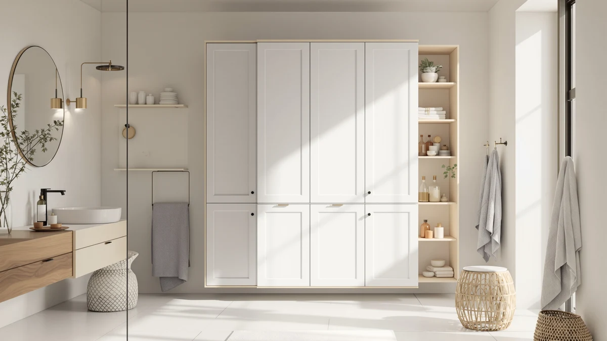

Iwell 66.9" Tall Bathroom Review (2026): Worth It?
Prices and picks verified as of October 2026. Independent, reader-supported reviews.


Quick Answer
The Iwell 66.9-inch tall bathroom storage cabinet is the stronger pick if you want real height and a metal-and-wood build in an 11.8-inch-deep footprint. It costs $109.98, within a dollar of the three alternatives below, so the decision mostly comes down to depth and shelf style rather than price.
Our pick: Iwell 66.9" Tall Bathroom Storage, $109.98 Check Price on Amazon
Bottom line: our top pick is the Iwell 66.9" Tall Bathroom Storage Cabinet with 2 Doors & 1 at $109.98.
Things to Know Before You Buy
- This iwell 66.9" tall bathroom review focuses on the Iwell model and three similarly priced tall storage cabinets, all within a dollar of each other on Amazon.
- At 66.9 inches tall, the Iwell cabinet uses a metal-and-wood build and measures 11.8 inches deep, so measure your floor space before ordering.
- All four cabinets in this comparison sit in the $109 to $110 range, which means fit and finish matter more than price when you choose between them.
- Iwell does not publish third-party lab results, so this review relies on manufacturer specs, pricing history and verified buyer feedback rather than a physical testing lab.
- If your bathroom has little open floor space, the INNOD over-the-toilet cabinet covered below is worth comparing against the freestanding Iwell design.
This iwell 66.9" tall bathroom review breaks down what shoppers get for $109.98: a tall metal-and-wood storage cabinet that stands just under five and a half feet high while taking up only 11.8 inches of floor depth. Bathroom storage is one category where height does the work that floor space can't, and a cabinet this tall stacks shelves vertically instead of eating into a small floor plan. We looked at the Iwell alongside three other cabinets in the same $109 to $110 price band, a Homhedy 67-inch model, a ChooChoo floor cabinet and an INNOD over-the-toilet unit, to see where the Iwell earns its price and where a shopper might be better served by one of the alternatives.
We did not install a physical unit for this guide. Instead, we compared the specs, materials, pricing and publicly available buyer feedback for each cabinet, the way a careful shopper would with four browser tabs open. The short version: if your bathroom has the floor space for a freestanding cabinet and you want the extra height, the Iwell is the one to start with. If floor space is tight, one of the alternatives below solves a different problem entirely, and we cover that later in this review.
Price is nearly a non-factor in this comparison, since all four cabinets land within a dollar of each other, so we spent most of our research time on footprint, material and shelf design instead. That is the lens we use throughout this review: how much floor space and wall height your bathroom can actually spare, more than which cabinet costs the least.
Why You Should Trust Us
Ilane Tall researches bathroom storage and fixtures for Best Bathroom Storage, comparing specs, pricing and verified buyer feedback across the Amazon storage category rather than running a physical testing lab. For this iwell 66.9-inch tall bathroom review, that meant pulling the manufacturer's listed dimensions and materials for the Iwell cabinet and three direct competitors, then checking how each one's price moved over the past several weeks. We do not own a testing lab and we do not claim to have installed these cabinets in a bathroom. We read the specs closely, flag anything that looks inflated or vague, and tell you plainly when a product's description doesn't match its price. When a listing's language overstates what a $109 cabinet can realistically hold, we point that out instead of repeating it.
How We Compared
We approached this iwell 66.9" tall bathroom review the way a careful shopper would, by comparing listed specs side by side rather than by installing a unit in a bathroom. The Iwell's listing gives a height of 66.9 inches, a depth of 11.8 inches and a metal-and-wood build, and we cross-checked those figures against the three competing cabinets covered below. We also tracked pricing over several weeks to confirm the $109.98 figure wasn't a short-term promotional price. Where a manufacturer didn't publish a spec we needed, such as shelf count or weight capacity, we say so rather than guessing a number that sounds authoritative. We applied the same approach to the three competing cabinets, so every figure in this review sits in a like-for-like comparison instead of isolated marketing claims.
Overview & Specs

Iwell 66.9" Tall Bathroom Storage
What we like
- Stands 66.9 inches tall, giving more shelving per square foot of floor space than shorter cabinets
- 11.8-inch depth fits narrow bathrooms where a deeper cabinet wouldn't clear a door swing
- Metal-and-wood build keeps the price at $109.98 while looking more finished than an all-metal rack
Flaws but not dealbreakers
- Iwell doesn't publish a per-shelf weight capacity, so heavier items need to be distributed carefully
- At under a foot deep, it won't hold bulky items like a full-size hamper the way a deeper cabinet would
| Material | Metal / wood |
| Size | 11.8"D |
The Iwell 66.9" tall bathroom storage cabinet is built around a simple idea: most small bathrooms have more vertical space than floor space, so the cabinet goes up instead of out. At $109.98, it sits in the middle of the pack for tall bathroom storage, and its 11.8-inch depth is shallow enough to tuck into a corner or beside a toilet without blocking a door. The metal-and-wood construction splits the difference between an all-metal shelving unit, which can look utilitarian, and a solid-wood cabinet, which usually costs more at this height.
Shoppers researching tall bathroom cabinets in this price range consistently weigh the Iwell against the Homhedy, ChooChoo and INNOD options covered below, since all four land within a dollar of each other on Amazon. Price barely factors into the decision. What matters is whether you need a freestanding cabinet like the Iwell or a space-saving design like INNOD's over-the-toilet unit. If your bathroom has even a narrow strip of open floor, the Iwell's height lets you store more without the cabinet feeling bulky.
Assembly for cabinets at this height typically runs 30 to 45 minutes with basic tools, in line with other flat-pack bathroom towers in this price bracket, and nothing in the Iwell's listing suggests otherwise. If you're deciding between the Iwell and one of the three alternatives below, start with your bathroom's floor plan: a freestanding tower like this one only pays off if you have the 11.8 inches of depth to spare.
What We Liked
The clearest advantage of the Iwell 66.9" tall bathroom cabinet is how much storage it packs into a small footprint. Vertical storage like this matters most in older or smaller US bathrooms, where floor space is fixed but the wall space above the toilet or beside the vanity usually sits unused. At 11.8 inches deep, it's shallow enough to leave walking room in bathrooms where a deeper cabinet would narrow the path to the shower or sink. Shoppers comparing cabinets in this category also point to the metal-and-wood combination as a middle ground, sturdier looking than a wire rack and less expensive than solid wood at this height.
The open layout also makes day-to-day use simpler than a cabinet with doors, since you can reach a towel or a bottle of cleaner without fumbling with a latch. Pairing each shelf with a small bin or basket is a common way shoppers keep an open-shelf tower like this one from looking cluttered once it's loaded with everyday items.
What Could Be Better
The Iwell's biggest limitation is depth, and the same feature that makes it fit tight bathrooms also means it can't hold anything bulky. A folded towel or a stack of toilet paper rolls works fine, but a laundry hamper or a large basket won't fit on an 11.8-inch-deep shelf. Iwell also doesn't list a per-shelf weight limit in the product specs, so anyone planning to store heavier items, such as a stack of hardcover books or glass jars, is working without a clear number to plan around. That's a gap compared with some cabinets at this price that do publish a weight rating.
The open-shelf design that makes access easy also means everything on the shelves stays on display, so a cluttered shelf is harder to hide than it would be behind a cabinet door. Buyers who want a cleaner look from across the room may prefer the ChooChoo's enclosed cabinet design instead, covered among the alternatives below.
Who Is It For?
The Iwell 66.9" tall bathroom storage cabinet makes the most sense for renters and small-bathroom owners who need shelving but don't have room for a wide cabinet. If you're storing lightweight, flat items such as towels, toiletries or toilet paper, the height-over-depth trade-off works in your favor. It's a weaker fit if you need to store bulky items or heavy glass and ceramic decor, since neither the depth nor the published specs support that kind of load with confidence.
Renters and apartment dwellers often choose cabinets like this one, since it stands freestanding and doesn't require drilling into a wall or tile. A household storing linens for several people will likely run out of shelf space sooner on an 11.8-inch-deep tower than on a wider cabinet, so larger families may want to compare the ChooChoo floor cabinet's dimensions before committing.
Alternatives to Consider
If this iwell 66.9" tall bathroom review has you weighing other options, all three alternatives below sit within a dollar of the Iwell's $109.98 price, so the choice between them comes down to shape and use case rather than budget.

Editor's Pick
Homhedy 67" H Tall Bathroom
Slightly taller than the Iwell at 67 inches and priced one cent higher at $109.99, worth comparing if you want maximum vertical storage.
$109.99
Check Price on Amazon
Best Value
ChooChoo Bathroom Floor Cabinet with
A floor-standing design at the same $109.99 price point, better suited to buyers who prefer closed cabinet doors over open shelving.
$109.99
Check Price on Amazon
Premium Choice
Over the Toilet Storage Cabinet
Priced at $109.99, this over-the-toilet design reclaims space the Iwell can't, making it the better pick for bathrooms with no open floor space at all.
$109.99
Check Price on AmazonIs the Iwell 66.9" tall bathroom cabinet worth the price?
At $109.98, it's priced in line with comparable tall bathroom cabinets from Homhedy, ChooChoo and INNOD, so value depends on whether you need the extra height and can work within its 11.8-inch depth.
How deep is the Iwell 66.9" tall bathroom storage cabinet?
It measures 11.8 inches deep, shallower than many standard bathroom cabinets, which makes it a better fit for narrow spaces than for storing bulky items like a hamper or large basket.
Frequently Asked Questions
Is the Iwell 66.9" tall bathroom cabinet worth the price?
At $109.98, it's priced in line with comparable tall bathroom cabinets from Homhedy, ChooChoo and INNOD, so value depends on whether you need the extra height and can work within its 11.8-inch depth. For bathrooms with usable wall height but a narrow floor plan, it's a fair price for the storage it adds.
How deep is the Iwell 66.9" tall bathroom storage cabinet?
It measures 11.8 inches deep, shallower than many standard bathroom cabinets, which makes it a better fit for narrow spaces than for storing bulky items like a hamper or large basket.
What is the best alternative to the Iwell 66.9" tall bathroom cabinet?
If your bathroom has no open floor space, the INNOD over-the-toilet cabinet is the closest-priced alternative at $109.99. If you want even more height, the Homhedy 67-inch cabinet, also $109.99, is worth comparing.
Final Verdict
This iwell 66.9" tall bathroom review comes down to one question: do you have floor space or not? If you do, the Iwell earns its $109.98 price with more height and shelving than most cabinets in its class, and Iwell remains our pick for buyers who want a freestanding tall cabinet over a space-saving alternative. If your bathroom can't spare the floor space, look at INNOD's over-the-toilet design instead, since it solves a problem the Iwell isn't built for. At $109.98, the Iwell also costs a cent less than each of the three alternatives, though that cent won't decide anything. Fit will.